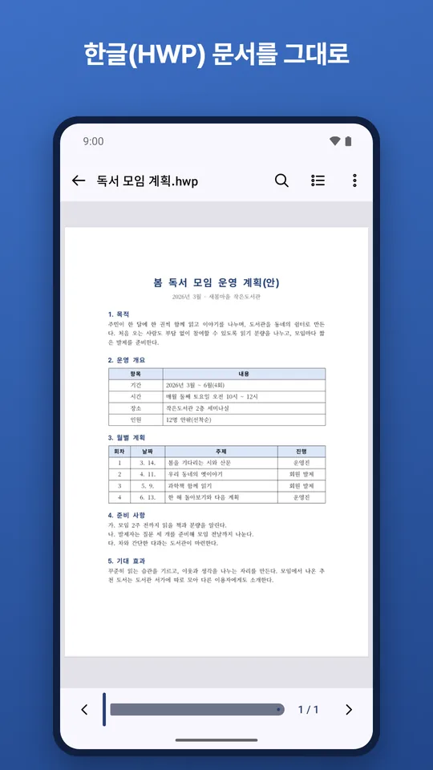
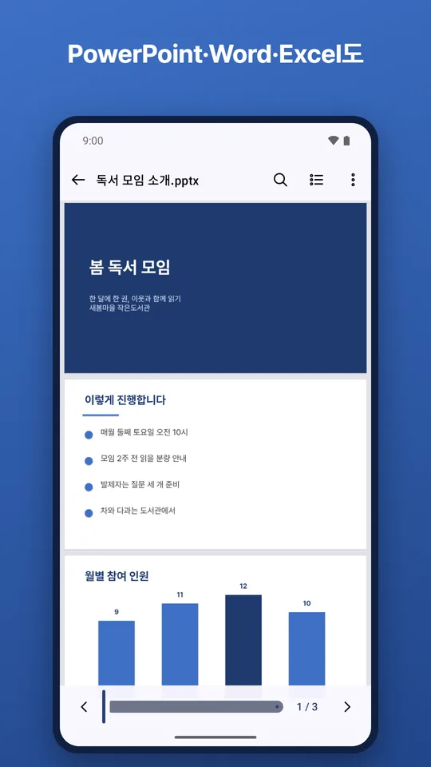
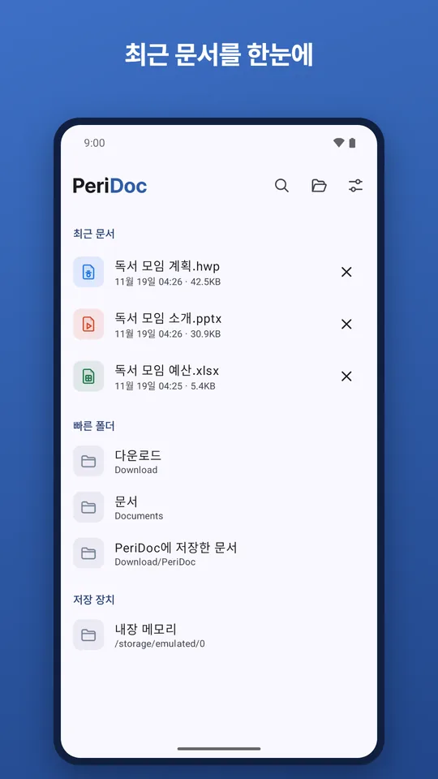
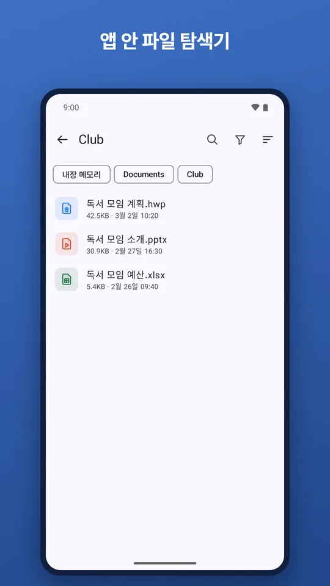

PeriDoc: 한글 HWP PDF 오피스 뷰어
한글(HWP·HWPX), PDF, 워드, 엑셀, 파워포인트 파일을 인터넷 없이 바로 여는 무료 문서 뷰어
Google Play



PeriDoc은 빠르고 가벼운 무료 문서 뷰어입니다. 한글(HWP·HWPX), PDF, 워드(DOCX), 엑셀(XLSX), 파워포인트(PPTX) 파일을 폰과 태블릿에서 바로 엽니다. 회원 가입도, 업로드도 없습니다.
한글 뷰어 (HWP·HWPX)
학교 가정통신문, 회사 공문, 관공서 서식처럼 카톡이나 메일로 받은 한글 파일을 누르면 바로 열립니다. 한컴오피스 한글로 만든 HWP, HWPX, HWP 3.0, HML 문서의 표, 그림, 쪽 모양을 그대로 보여 줍니다. 함초롬 같은 PC 글꼴을 가져와 더 원본에 가깝게 볼 수도 있습니다.
PDF 뷰어
찾기, 글자 선택·복사, 목차, 쪽 썸네일, 암호 걸린 PDF 열기를 지원합니다.
오피스 문서 뷰어
워드 문서(DOCX), 엑셀 표(XLSX), 파워포인트 발표 자료(PPTX)를 무거운 오피스 앱 없이 열어 봅니다.
그 밖의 형식
텍스트(TXT), 마크다운(MD), CSV, 웹 문서(HTML), 그림(JPG, PNG, WebP, HEIC, GIF, BMP)
주요 기능
- 한 쪽씩 보기·이어서 보기, 가로 화면 2쪽 보기, 두 손가락 확대
- 문서 안 찾기, 글자 선택·복사, 표를 CSV로 복사
- 목차와 썸네일로 원하는 쪽으로 이동
- 읽던 위치 기억
- 쪽 회전, 쪽을 그림으로 저장, PDF로 저장, 공유, 다른 앱으로 열기
- 기기 안 문서를 모두 찾아 주는 파일 탐색기, 휴지통, 홈 화면 바로가기
- 기본 앱으로 지정하면 카카오톡·Gmail·내 파일·다운로드에서 누르는 즉시 열림
- PC 글꼴 가져오기
개인정보와 오프라인
- 문서는 기기 밖으로 나가지 않습니다. 업로드하지 않고, 문서를 그리는 화면은 네트워크를 쓸 수 없게 막혀 있습니다.
- 인터넷이 없어도 열립니다. 가입·로그인이 필요 없습니다.
- 인터넷은 화면 아래 작은 배너 광고(Google AdMob)에만 씁니다.
화면 언어: 한국어, 영어